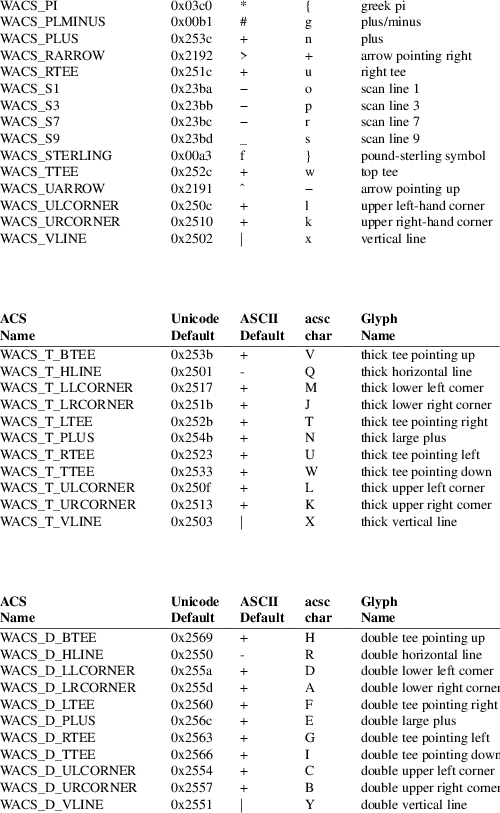
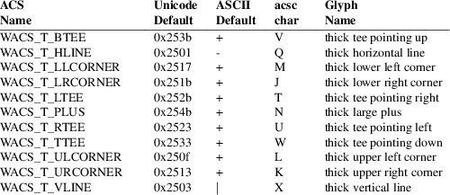
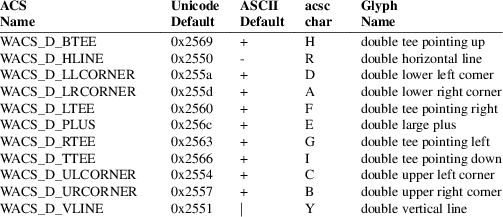

add_wch, wadd_wch, mvadd_wch, mvwadd_wch, echo_wchar, wecho_wchar − add a complex character and rendition to a curses window, then advance the cursor
#include <curses.h>
int add_wch(
const cchar_t *wch );
int wadd_wch( WINDOW *win, const cchar_t
*wch );
int mvadd_wch( int y, int x,
const cchar_t *wch );
int mvwadd_wch( WINDOW *win, int
y, int x, const cchar_t
*wch );
int
echo_wchar( const cchar_t *wch );
int wecho_wchar( WINDOW *win, const cchar_t
*wch );
add_wch
The add_wch, wadd_wch, mvadd_wch, and
mvwadd_wch functions put the complex character
wch into the given window at its current position,
which is then advanced. These functions perform wrapping and
special-character processing as follows:
|
• |
If wch refers to a spacing character, then any previous character at that location is removed. A new character specified by wch is placed at that location with rendition specified by wch. The cursor then advances to the next spacing character on the screen. | ||
|
• |
If wch refers to a non-spacing character, all previous characters at that location are preserved. The non-spacing characters of wch are added to the spacing complex character, and the rendition specified by wch is ignored. | ||
|
• |
If the character part of wch is a tab, newline, backspace or other control character, the window is updated and the cursor moves as if addch were called. |
echo_wchar
The echo_wchar function is functionally equivalent to
a call to add_wch followed by a call to
refresh(3X). Similarly, the wecho_wchar is
functionally equivalent to a call to wadd_wch
followed by a call to wrefresh. The knowledge that
only a single character is being output is taken into
consideration and, for non-control characters, a
considerable performance gain might be seen by using the
*echo* functions instead of their equivalents.
Line
Graphics
Like addch(3X), addch_wch accepts symbols
which make it simple to draw lines and other frequently used
special characters. These symbols correspond to the same
VT100 line-drawing set as addch(3X).

The wide-character configuration of ncurses also defines symbols for thick lines (acsc “J” to “V”):

and for double-lines (acsc “A” to “I”):

Unicode’s descriptions for these characters differs slightly from ncurses, by introducing the term “light” (along with less important details). Here are its descriptions for the normal, thick, and double horizontal lines:
|
• |
U+2500 BOX DRAWINGS LIGHT HORIZONTAL |
|||
|
• |
U+2501 BOX DRAWINGS HEAVY HORIZONTAL |
|||
|
• |
U+2550 BOX DRAWINGS DOUBLE HORIZONTAL |
All routines return the integer ERR upon failure and OK on success.
X/Open does not define any error conditions. This implementation returns an error
|
• |
if the window pointer is null or | ||
|
• |
if it is not possible to add a complete character in the window. |
The latter may be due to different causes:
|
• |
If scrollok is not enabled, writing a character at the lower right margin succeeds. However, an error is returned because it is not possible to wrap to a new line | ||
|
• |
If an error is detected when converting a multibyte character to a sequence of bytes, or if it is not possible to add all of the resulting bytes in the window, an error is returned. |
Functions with a “mv” prefix first perform a cursor movement using wmove, and return an error if the position is outside the window, or if the window pointer is null.
Note that add_wch, mvadd_wch, mvwadd_wch, and echo_wchar may be macros.
All of these functions are described in the XSI Curses standard, Issue 4. The defaults specified for line-drawing characters apply in the POSIX locale.
X/Open Curses makes it clear that the WACS_ symbols should be defined as a pointer to cchar_t data, e.g., in the discussion of border_set. A few implementations are problematic:
|
• |
NetBSD curses defines the symbols as a wchar_t within a cchar_t. | ||
|
• |
HPUX curses equates some of the ACS_ symbols to the analogous WACS_ symbols as if the ACS_ symbols were wide characters. The misdefined symbols are the arrows and other symbols which are not used for line-drawing. |
X/Open Curses does not define symbols for thick- or double-lines. SVr4 curses implementations defined their line-drawing symbols in terms of intermediate symbols. This implementation extends those symbols, providing new definitions which are not in the SVr4 implementations.
Not all Unicode-capable terminals provide support for VT100-style alternate character sets (i.e., the acsc capability), with their corresponding line-drawing characters. X/Open Curses did not address the aspect of integrating Unicode with line-drawing characters. Existing implementations of Unix curses (AIX, HPUX, Solaris) use only the acsc character-mapping to provide this feature. As a result, those implementations can only use single-byte line-drawing characters. Ncurses 5.3 (2002) provided a table of Unicode values to solve these problems. NetBSD curses incorporated that table in 2010.
In this implementation, the Unicode values are used instead of the terminal description’s acsc mapping as discussed in ncurses(3X) for the environment variable NCURSES_NO_UTF8_ACS. In contrast, for the same cases, the line-drawing characters described in curs_addch(3X) will use only the ASCII default values.
Having Unicode available does not solve all of the problems with line-drawing for curses:
|
• |
The closest Unicode equivalents to the VT100 graphics S1, S3, S7 and S9 frequently are not displayed at the regular intervals which the terminal used. | ||
|
• |
The lantern is a special case. It originated with the AT&T 4410 terminal in the early 1980s. There is no accessible documentation depicting the lantern symbol on the AT&T terminal. |
Lacking documentation, most readers assume that a storm lantern was intended. But there are several possibilities, all with problems.
Unicode 6.0 (2010) does provide two lantern symbols: U+1F383 and U+1F3EE. Those were not available in 2002, and are irrelevant since they lie outside the BMP and as a result are not generally available in terminals. They are not storm lanterns, in any case.
Most storm lanterns have a tapering glass chimney (to guard against tipping); some have a wire grid protecting the chimney.
For the tapering appearance, ☃ U+2603 was adequate. In use on a terminal, no one can tell what the image represents. Unicode calls it a snowman.
Others have suggested these alternatives: § U+00A7 (section mark), Θ U+0398 (theta), Φ U+03A6 (phi), δ U+03B4 (delta), ⌧ U+2327 (x in a rectangle), ╬ U+256C (forms double vertical and horizontal), and ☒ U+2612 (ballot box with x).
curses(3X), curs_addch(3X), curs_attr(3X), curs_clear(3X), curs_outopts(3X), curs_refresh(3X), putwc(3)